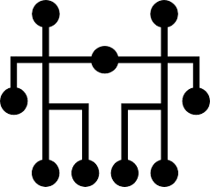

DigiClips Senior Capstone Project
 DigiClips is a media monitoring and content delivery service company. They cover TV, radio stations, and online sources including newspapers, magazines, websites, blogs, and social media. Broadcast reports include text, previews, and media analysis, while video and audio clips are professionally edited and delivered in a variety of formats.
Our team was tasked with refining the existing DigiClips search engine by implementing two key features: improving the Media Results Page to display more media types and integrating buttons and options across the site. Additionally, our team made many front-end changes to the site to improve the overall user experience, which involved a lot of debugging to ensure smooth functionality and an intuitive user interface.
Work Done
- Integrated dropdown boxes to allow for a filtered search
- Implemented numerous front-end improvements for better user experience.
- Debugged back-end search engine algorithm for filtered search
If you are interested in learning more about DigiClips, feel free to visit their website down below!